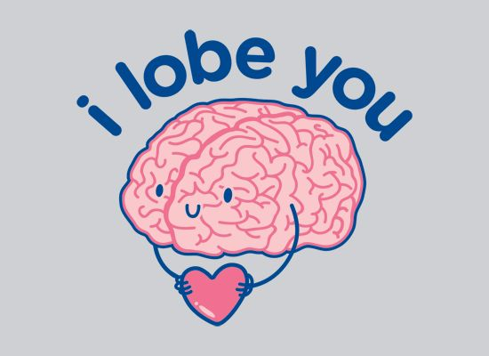

Some strokes are small - they don't do much damage, and people can get better very quickly! Some strokes are nastier, though, and since our brains control everything we do, sometimes getting better from a nasty stroke is much more difficult.
If a brain is damaged enough, a person might not be able to do things the way that they're used to - they might need a walking stick or a wheelchair to get around, they might have difficulty seeing, eating, reading, writing, hearing or talking, or have to relearn any of those things. Someone who has had a major stroke may need to stay in a hospital to get the care that they need. Once they come home, special care is needed, such as speech therapy, medicine and many doctor visits.
If you know someone who has had a stroke, the best and most important thing you can do is encourage them to keep doing the hard work needed to get better, and show them that you love them like you always have. You might feel sad, frustrated or angry that someone you love has had a stroke, but just remember that many people do get better, but be patient because no one knows how long it will take.
It is super important to talk to someone, like your parents, older siblings or a teacher, if you have any worries or questions about a loved one that has had a stroke. The most important thing to remember is that the person you love is the same person underneath, they still love and care for the special people in their lives.
Sneaky ghosts are moving things around. OoooooOOOOoo.
Anyone who has a stroke should go to the hospital for treatment.
To find out what caused the stroke, doctors will run lots of tests, one of which is the CT Scan, which will take a picture of the brain and tell the doctor how big the stroke was. Most people need medicine after a stroke, and a few might need an operation.
If a person experiences an ischemic stroke, which is caused by blocked blood vessels, the doctor might give that person medicine that will keep the blood from clotting too much, such as a blood thinner. There is even a "clot busting" medicine which can break up a blood clot. This medicine is given through an IV and works best if it is given very quickly.
Surgery for treating stroke:
To prevent another stroke from happening later on, doctors may perform surgery to open up a clogged blood vessel. If a person has had a haemorrhagic stroke, surgery may be needed to remove blood clots or fix weak blood vessels.